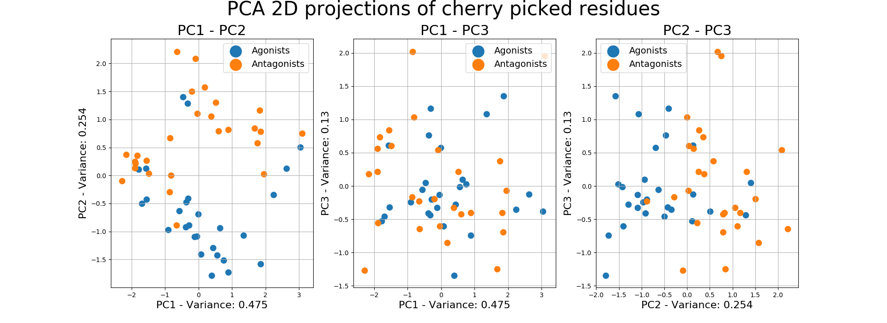

9. Basic Examples¶
Here we can find some basic examples of using the methods included in the package.
Note
We suggest using the .shape attribute when running these examples in order to understand the expected
inputs and outputs.
9.1. RMSF Cherry Picked Residues¶
We define cherry picking as empirically deciding which residues and on which windows we are going to calculate the RMSF of the ligands. The selection of the residues may come from a combination of plots or from the experience in the field.
The example below inputs a dictionary of specific residues on specific windows and creates their 2D PCA projection of their 1st 3 PCs, in order to evaluate their separability.
from MDSimsEval.utils import create_analysis_actor_dict
from MDSimsEval.rmsf_bootstrapped_analysis import find_rmsf_of_residues
from sklearn.decomposition import PCA
import matplotlib.pyplot as plt
import numpy as np
# Reading the agonists and the antagonists
analysis_actors_dict = create_analysis_actor_dict('path_to_data_directory/')
# IMPORTANT: For any RMSF analysis always initialize rmsf_cache as an empty dict and pass it as an argument to the
# rmsf methods
rmsf_cache = {}
# A dictionary of selected residues (keys) and a list of windows (values) that we will use
residues = {
115: [[0, 500], [2000, 2500]],
117: [[2000, 2500]],
81: [[2000, 2500]],
78: [[1000, 1500], [1500, 2000]],
254: [[0, 500], [1500, 2000]],
}
# Create an array of the RMSFs of the selected residues on the selected windows
rmsf_array = []
for res, windows in residues.items():
for window in windows:
rmsf_array.append(find_rmsf_of_residues(analysis_actors_dict, [res], window[0], window[1], rmsf_cache))
# Reshape from (x, y, 1) to (x, y) and transpose so as we have as rows the ligands and as columns their RMSFs of the
# specific residues
rmsf_array = np.array(rmsf_array).reshape(len(rmsf_array), len(rmsf_array[0])).T
# We will keep the first 3 components
pca = PCA(n_components=3)
transformed_residues = pca.fit_transform(rmsf_array)
fig = plt.figure(figsize=(20, 7))
fig.suptitle(f'PCA 2D projections of cherry picked residues', fontsize=30, y=1)
# Combinations of components (PC1 - PC2, PC1 - PC3, PC2 - PC3)
pairs = [(0, 1), (0, 2), (1, 2)]
for i, j in pairs:
ax = fig.add_subplot(1, 3, i + j)
# Plot the agonist dots
plt.scatter(x=transformed_residues[:len(analysis_actors_dict['Agonists']), i],
y=transformed_residues[:len(analysis_actors_dict['Agonists']), j],
label='Agonists', s=80)
# Plot the antagonist dots
plt.scatter(x=transformed_residues[len(analysis_actors_dict['Agonists']):, i],
y=transformed_residues[len(analysis_actors_dict['Agonists']):, j],
label='Antagonists', s=80)
plt.xlabel(f"PC{i + 1} - Variance: {np.round(pca.explained_variance_ratio_[i], decimals=3)}", fontsize=16)
plt.ylabel(f"PC{j + 1} - Variance: {np.round(pca.explained_variance_ratio_[j], decimals=3)}", fontsize=16)
plt.grid()
plt.legend(prop={'size': 14}, markerscale=2, ncol=1)
plt.title(f'PC{i + 1} - PC{j + 1}', fontsize=22)
plt.show()
Output
{kind=link}